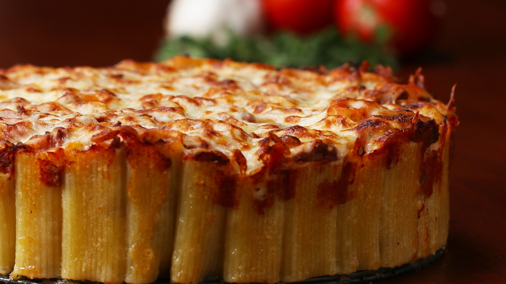

FUSION FOODS

Pasta pie, also known as "timballo" or "timpano," traces its origins to Italian cuisine, particularly in southern regions like Sicily and Campania. Dating back to the Middle Ages, it evolved as a hearty dish typically prepared for festive occasions or gatherings. Combining layers of pasta, often penne or ziti, with savory fillings such as meat, cheese, and vegetables, it embodies a rich culinary tradition passed down through generations. Made famous by the 1996 film "Big Night," where it starred as a centerpiece dish, pasta pie gained international recognition and sparked renewed interest in traditional Italian cooking. Today, it remains a beloved comfort food, celebrated for its flavorful layers and nostalgic appeal, continuing to enchant palates worldwide.
Click on the image to watch recipe video..!!
Step-1:Preheat oven to 425˚F.
Step-2:Lightly grease a 9” spring form pan and place onto a baking sheet.
Step-3:Fill a large pot with water and place over high heat. Add a small handful of salt followed by pasta to the water and boil until pasta is al dente, 5 to 6 minutes, stirring occasionally (you want the pasta to have more of a bite than you would normally want, since you’ll be baking it too).
Step-4:Drain pasta in a colander and set aside.
Step-5:In a large mixing bowl whisk together milk, cream, eggs, ¾ cup Parmesan, mozzarella, asiago, garlic, pepper, and salt until fully combined.
Step-6:Add pasta to milk mixture and toss together until all pasta is evenly and well coated.
Step-7:Pour mixture evenly into prepared springform pan, gently pressing pasta down to create a flatten top. Sprinkle extra pepper over top, cover tightly with foil and bake for 30 minutes.
Step-8:After 30 minutes, remove foil, sprinkle remaining Parmesan over top and continue to bake for an additional 20 to 30 minutes or until pie has set in the center.
Step-9:Remove pie from oven and allow it to cool for about 15 minutes. Release it from the pan, slice and serve.